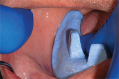

Procedure:
- o Fit custom tray to patient. The borders of the tray should be 2mm short of contact to active vestibular borders (Fig 01). Tray should extend to the vibrating line in the posterior. Tray modification should be made with an acrylic bur (Fig 02).
Fig 01
Fig 02
VPS Instructions:
- Apply VPS adhesive to the borders of one half of the tray. After the adhesive is set, place a bead of VPS heavy bodied impression material on the border of the tray (Fig 03).
Fig 03 - Place the tray intraorally and perform muscle molding by manipulating the oral muscles to simulate normal function(Fig 04).

Fig 04 - Remove excess material not associated with the border molding from the external and internal tray areas.
- Make corrections for areas with deficient tissue contact and modify the tray if there are areas of over-extension or area that are too thick. These areas are usually defined by the tray material showing through the border molding material.
- Continue border molding until the entire trays is correctly adapted to the vestibular areas.
- The posterior lateral border may be thin due to the coronoid process displacing the border molding material if the patient is open wide. Have the patient close slightly and shift the mandible toward the side being border molded to capture the vestibule in this area.
- Remove any wax spacers or tissue stops, place five vent holes through the tray. (Incisive Papilla, 3cm distal to the incisive papilla on each side and two along the mid palatal suture line)
- Place VPS adhesive on the exposed tray.
- Cover the entire tray, including the border molded areas, with a light bodied VPS impression material (Fig 05 and Fig 06).
Fig 05
Fig 06 - Inspect the impression for voids, pressure spots or other deficiencies and make corrections as needed (Fig 07).
Fig 07 - Disinfect the impression properly before removing it from the clinical area.